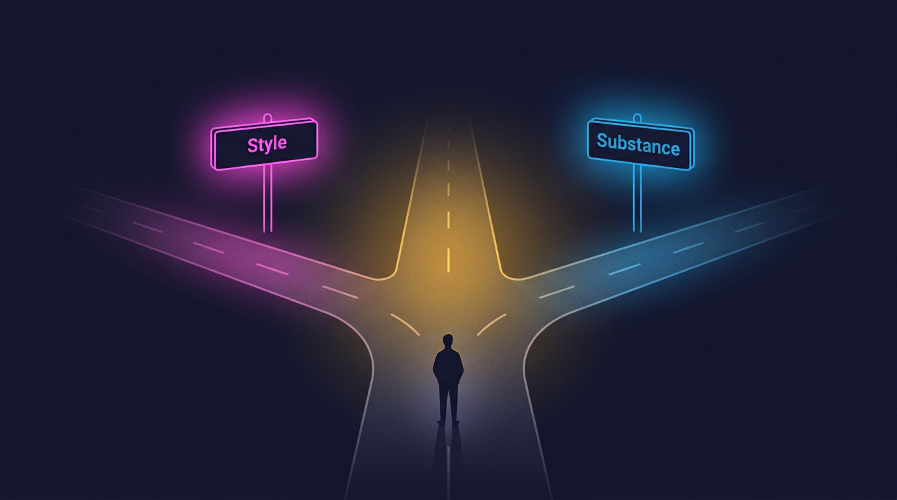

Latest thinking
From the blog
New posts land here as they're written. No fixed schedule, just whenever there's something worth actually saying.

Most recentContent Is King. Style Isn't.
Content is a funny word when you actually stop and think about it. After fifteen-plus years building courses, here's why the build, the flow and the avatar on screen were never the thing.
Read the post →
 Most popular
Most popular
AI in Instructional Design: What It's Actually Changed for Me
I'm a big Claude user, and I'm not an expert. What AI has genuinely changed about building courses, and what it hasn't touched at all.
Read the post →
More from the blog
More soon
Written when there's something worth saying, not on a content calendar.